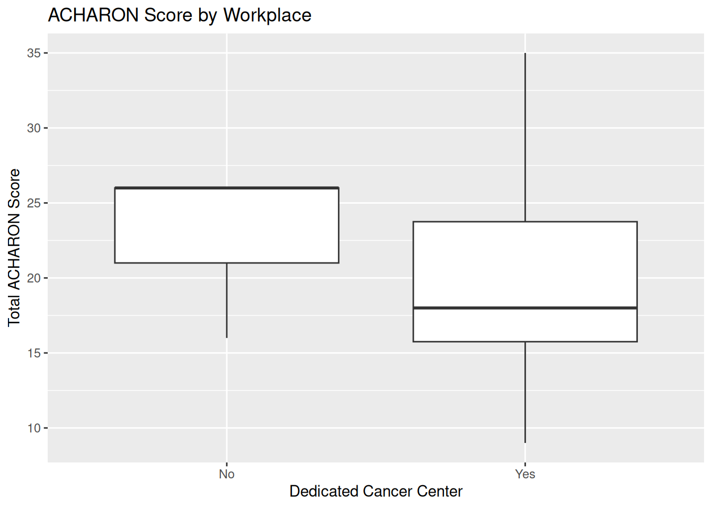
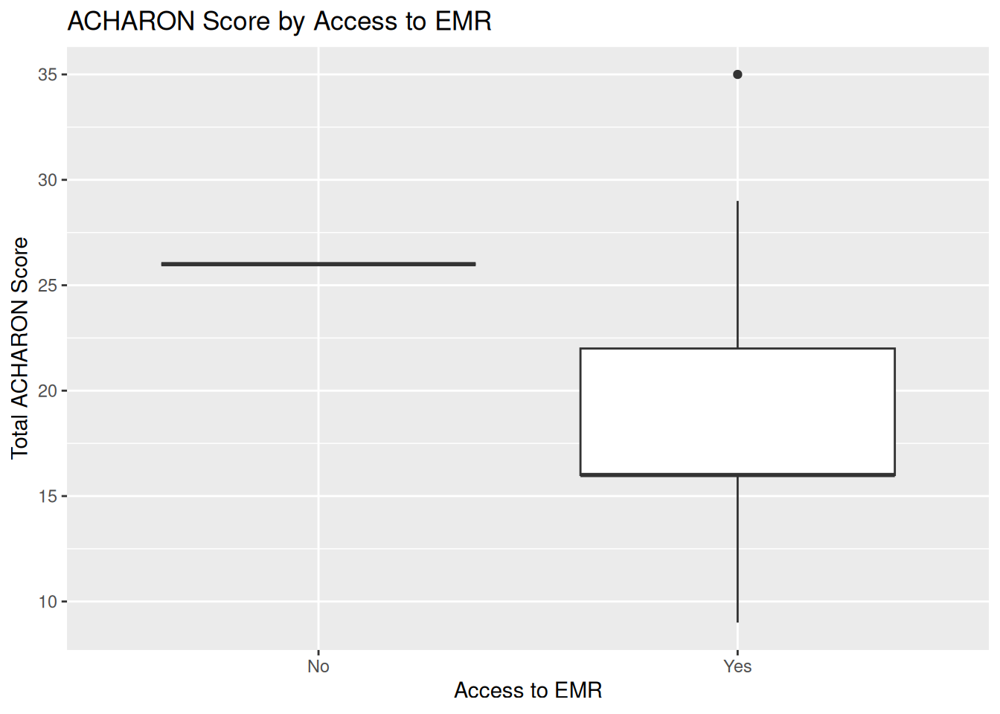
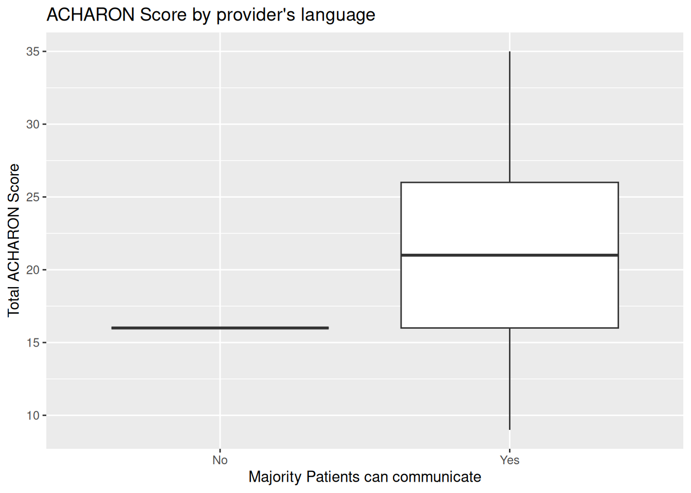
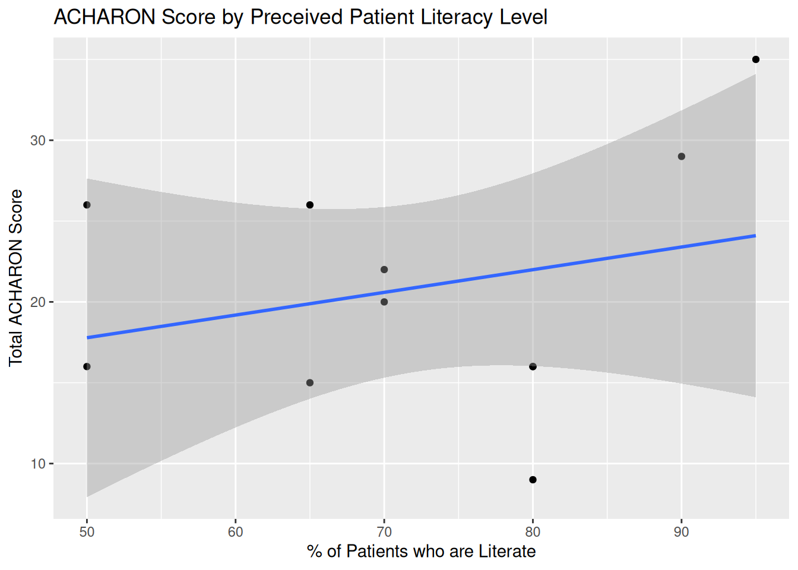

| Characteristic | N = 91 |
|---|---|
| Age in Years | |
| 24 | 1 (14%) |
| 28 | 2 (29%) |
| 30 | 2 (29%) |
| 40 | 1 (14%) |
| 45 | 1 (14%) |
| Unknown | 2 |
| Gender | |
| Female | 7 (88%) |
| Male | 1 (13%) |
| Unknown | 1 |
| Years of experience after PG | |
| 1 | 1 (13%) |
| 2 | 3 (38%) |
| 4 | 1 (13%) |
| 5 | 1 (13%) |
| 10 | 1 (13%) |
| 14 | 1 (13%) |
| Unknown | 1 |
| Language Proficiency Level | |
| Full Professional | 1 (11%) |
| Limited Working | 1 (11%) |
| Native | 5 (56%) |
| Professional Working | 2 (22%) |
| Translator required during patient encounter | 1 (11%) |
| Working in Dedicated Cancer Center | 6 (67%) |
| Working EMR System | 7 (78%) |
| Workdays spent in OPD | |
| 1 | 1 (11%) |
| 2 | 5 (56%) |
| 3 | 1 (11%) |
| 4 | 1 (11%) |
| 7 | 1 (11%) |
| Workdays spent in IPD | |
| 0 | 2 (22%) |
| 2 | 3 (33%) |
| 3 | 2 (22%) |
| 4 | 2 (22%) |
| Workdays spent in OT | |
| 0 | 7 (78%) |
| 1 | 1 (11%) |
| 3 | 1 (11%) |
| Workdays spent in Review Clinic | |
| 0 | 5 (56%) |
| 1 | 2 (22%) |
| 2 | 2 (22%) |
| Number of patients seen in OP in average | |
| 2 | 3 (33%) |
| 4 | 1 (11%) |
| 10 | 1 (11%) |
| 12 | 1 (11%) |
| 35 | 1 (11%) |
| 50 | 1 (11%) |
| 200 | 1 (11%) |
| 1 n (%) | |
ACHARON Survey Results 2024
For this we received a total of 9 complete responses for this survey. Survey started at 29th March 2024. Responses were allowed up until 5th April 2024 8:00 AM Indian Standard Time.
In the following table we will review the participants’ responses about the patients educational profile and perceived ability to complete QoL
| Characteristic | N = 91 |
|---|---|
| Can Majority of patients communicate in providers language | 8 (89%) |
| Percent of patients who are literate | |
| 50 | 2 (22%) |
| 65 | 2 (22%) |
| 70 | 1 (11%) |
| 80 | 3 (33%) |
| 95 | 1 (11%) |
| Percent of patients who can fill a QoL questionnaire | |
| 40 | 1 (11%) |
| 50 | 2 (22%) |
| 60 | 1 (11%) |
| 65 | 1 (11%) |
| 70 | 3 (33%) |
| 80 | 1 (11%) |
| 1 n (%) | |
In the following section we review the attitudes of the providers towards routine collection of PROMs. The ACHARON survey was designed to evaluate providers’ attitudes in four distinct domains: 1. Attitudes towards the integration of PROM in clinical practice 2. Attitudes towards the identification of patient needs 3. Attitudes towards managing and addressing patient issues 4. Attitudes towards the impact on care experience
We will first see the ratings provided for each of the question
Integration of PROM in clinical practice
| Characteristic | N = 91 |
|---|---|
| Change in Workload | |
| 1 | 3 (33%) |
| 2 | 2 (22%) |
| 3 | 4 (44%) |
| Patient Compliance | |
| 0 | 1 (11%) |
| 1 | 2 (22%) |
| 2 | 3 (33%) |
| 3 | 3 (33%) |
| Impact on Shared Decision Making | |
| 1 | 4 (44%) |
| 2 | 3 (33%) |
| 3 | 2 (22%) |
| 1 n (%) | |
The median score for this scale was 5. Of the participants 9 had a positive score and 0 had a negative score.
Identification of patient needs
| Characteristic | N = 91 |
|---|---|
| Understanding of Patient Issues | |
| 0 | 2 (22%) |
| 1 | 1 (11%) |
| 2 | 3 (33%) |
| 3 | 3 (33%) |
| Focus on Patient well being | |
| 0 | 1 (11%) |
| 1 | 2 (22%) |
| 2 | 2 (22%) |
| 3 | 4 (44%) |
| Individualize Treatment | |
| 0 | 1 (11%) |
| 1 | 1 (11%) |
| 2 | 3 (33%) |
| 3 | 4 (44%) |
| 1 n (%) | |
The median score for this scale was 6. Of the participants 9 had a positive score and 0 had a negative score.
Attitudes towards managing and addressing patient issues
| Characteristic | N = 91 |
|---|---|
| Impact on expectations | |
| 0 | 1 (11%) |
| 1 | 3 (33%) |
| 2 | 4 (44%) |
| 3 | 1 (11%) |
| Burden in healthcare workers | |
| -1 | 1 (11%) |
| 0 | 2 (22%) |
| 1 | 3 (33%) |
| 2 | 1 (11%) |
| 3 | 2 (22%) |
| Identification of addressable issues | |
| 1 | 4 (44%) |
| 2 | 2 (22%) |
| 3 | 3 (33%) |
| 1 n (%) | |
The median score for this scale was 3. Of the participants 9 had a positive score and 0 had a negative score.
Attitudes towards impact on care experience
| Characteristic | N = 91 |
|---|---|
| Impact on expectations | |
| -3 | 1 (11%) |
| -1 | 3 (33%) |
| 1 | 4 (44%) |
| 2 | 1 (11%) |
| Burden on healthcare workers | |
| 0 | 1 (11%) |
| 1 | 2 (22%) |
| 2 | 2 (22%) |
| 3 | 4 (44%) |
| Identification of addressable issues | |
| 1 | 4 (44%) |
| 2 | 2 (22%) |
| 3 | 3 (33%) |
| 1 n (%) | |
The median score for this scale was 4. Of the participants 9 had a positive score and 0 had a negative score.
Overall attitude
The median ACHARON score for the participants was 16.
The following plot demonstrates the overall attitude score distribution
Gender wise distribution
Age wise distribution
Years of experience
Fluency with native language
Translator Need
Patient load in OPD
Working in Cancer Center

EMR Access

Can patients communicate with provider in provider’s language where provider is fluent

Perception of Patient Literacy
